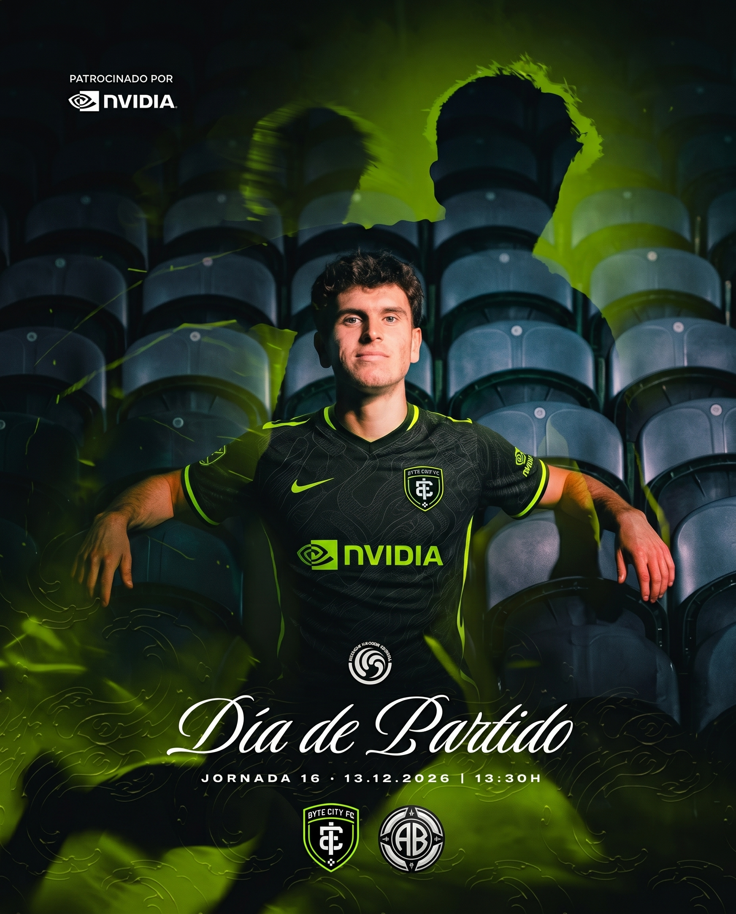
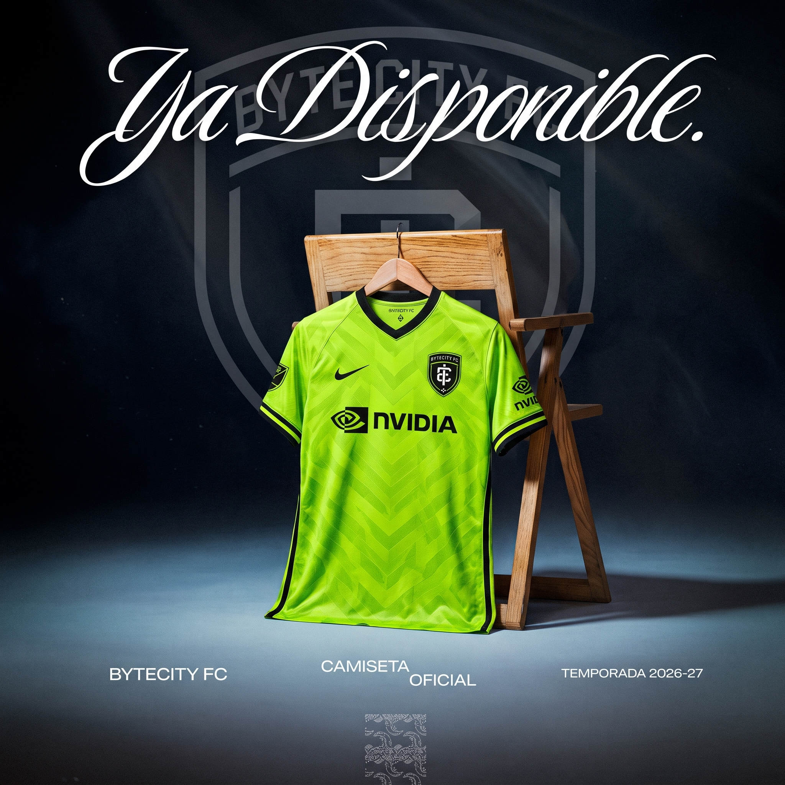

Club
Bienvenida a la temporada 2026-2027
Byte City FC inicia una nueva temporada con ilusión, una plantilla renovada y el objetivo de seguir creciendo dentro de la Liga Digital.
Leer noticia completaNoticias, imágenes y novedades de Byte City FC.
Club
Byte City FC inicia una nueva temporada con ilusión, una plantilla renovada y el objetivo de seguir creciendo dentro de la Liga Digital.
Leer noticia completa
Equipación
El club ha mostrado su primera equipación de la temporada, inspirada en la unión entre el mundo tecnológico y la tradición futbolística.
Leer noticia completa
Historia
Analizamos los puntos en común y las diferencias entre el proyecto de Byte City FC y una de las instituciones más reconocidas del fútbol mundial.
Leer noticia completa
Partidos
La victoria frente a RedStorm FC permitió al equipo sumar tres puntos y mantener el ritmo competitivo de las jornadas anteriores.
Leer noticia completa
Afición
Los socios y seguidores de Byte City FC continúan convirtiendo cada partido en casa en una cita colectiva con identidad propia.
Leer noticia completaClub
La nueva temporada arranca con el objetivo de consolidar la identidad del club y competir al máximo nivel en la Liga Digital. El cuerpo técnico ha preparado una pretemporada basada en el trabajo colectivo, la intensidad y la incorporación de nuevos perfiles.
Los jugadores han completado varios entrenamientos de adaptación al sistema de juego. La dirección deportiva considera que el equilibrio entre juventud y experiencia será una de las claves del proyecto.
Volver al listado«Queremos que cada partido represente nuestra forma de entender el fútbol: trabajo, creatividad y unión.»
Equipación

La primera equipación incorpora los colores oficiales del club y un diseño inspirado en circuitos digitales. La pieza mantiene líneas deportivas limpias y representa el lema del equipo: Play, Code, Win.
Los socios podrán adquirir la equipación en Nuestra piel, la tienda oficial del club.
Volver al listadoHistoria
Esta iniciativa permite comparar dos proyectos muy distintos: una institución histórica y consolidada con un club ficticio nacido en el entorno educativo y tecnológico. Aunque sus dimensiones no sean comparables, ambos comparten la importancia del trabajo en equipo y la pertenencia de sus aficiones.
El análisis ayuda a identificar aspectos organizativos, deportivos y culturales que Byte City FC puede estudiar para seguir desarrollándose.
Volver al listadoPartidos
El marcador reflejó el buen rendimiento colectivo de Byte City FC ante RedStorm FC. El equipo controló el ritmo, aprovechó sus ocasiones y mantuvo una defensa segura durante los noventa minutos.
El siguiente partido llega tras una semana de preparación intensa. Toda la plantilla quiere seguir sumando y afrontar el calendario con confianza.
Consultar todos los resultadosAfición
Los cánticos y el apoyo incondicional de la afición han acompañado al equipo durante toda la temporada. Los socios consideran el estadio un lugar de encuentro donde compartir la pasión por el fútbol y la identidad de Byte City.
Las peñas organizan desplazamientos, reuniones y actividades que hacen crecer la comunidad alrededor del equipo.
Conocer a la afición